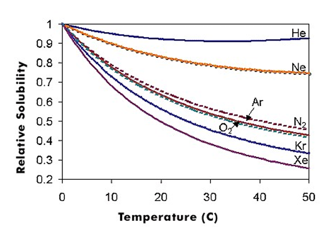

溶液的溶解度與濃度
Solubility and Concentration Units
溶解度曲線與再結晶
溶解度曲線圖示


- KNO$_3$：隨溫度大幅增加。
- NaCl：幾乎不受溫度影響。
- Na$_2$SO$_4$：32.4°C 前吸熱，之後放熱。
再結晶 (Recrystallization)
利用溶解度隨溫度變化差異大的特性，來純化物質的方法。
步驟：
- 高溫配製飽和溶液
- 趁熱過濾去除雜質
- 冷卻使其結晶析出
- 過濾取得純淨晶體
1 / 11
≡